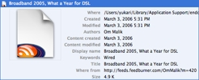

What is endo?
endo is an aggregator that you can use to stay up to date on your favorite news sites and weblogs. Subscribe to your favorite news sites, blogs, and any other website that offers syndication. endo polls them periodically and optionally notifies you of new articles.

In the context of web sites, aggregation — also known as syndication — is a way to republish a web site's content in a form suitable for reading by software. The main advantage of syndication is that you can use software such as endo to read the contents of web sites without having to actually visit them via a web browser. It gives you the ability to be notified of changes without having to visit the web site periodically. Currently, there are three main syndication formats: RDF, RSS and Atom. endo can read all existing versions of both formats.
Groups
As your subscriptions list grows, it becomes harder to manage them. endo not only facilitates grouping subscriptions, it also lets you make smart groups using rules that can be as simple or as complicated as you want. You can quickly navigate between groups using the groups bar or configurable keyboard shortcuts. You can rearrange groups and you can drag subscriptions around as well.
Customizable
Tastes differ, so endo allows you to see the groups and articles the way you prefer it. As a flat list or hierarchically, with summaries or without, with tags or without, groups as icons or as text. Your mileage may vary. To navigate between groups and articles you don't even need to touch your mouse once.
Spotlight
 Want to quickly find an article? Use the quick filter in the article list or use Spotlight. You can search using Spotlight using the Finder or from within endo. Metadata stored in Spotlight for endo articles include keywords (tags), authors, and URL. Information wants to be found.
Smart downloads
Many articles nowadays have downloadable files embedded. Some are so-called “enclosures”, others are torrent files. Most of these files are likely to be movies or audio and tend to be large in size. Downloading these can take a long time and you may want to seed torrents as well. These download tasks are best done in the background while you do your normal work. endo therefore employs a helper application, called endoBot and which runs as a menu bar utility, for downloading files and seeding torrents. endoBot can also play movies or add files to your iTunes library.
Flagging, Blogging and Bookmarking
Articles that you have found to be of interest can either be flagged for permanent storage, send to your blog client (ecto, for example), or bookmarked on del.icio.us. endo's del.icio.us bookmarker supports extended descriptions, tags, and datestamps. It even creates a summary of the articles contents for you. Sharing your interest could not be easier.
Plugins
The power and flexibility of endo can be extended using plugins. Plugins can do as little as creating a subscription or as much as providing the actual feed. endo comes with four built-in plugins. There are plugins to create del.icio.us, Flickr, and Technorati subscriptions. There is also a plugin that can run your own scripts. These scripts can be in AppleScript, Bash, Perl, PHP, Python, or Ruby, and should generate feeds.
Synchronizing and Attention
Registered users can use endo's sync capabilities. Your subscription list and the read status of downloaded articles can be synchronized with your other Macs either via your .Mac account or via our own server, using the Attention.XML format.
Other
- First time user assistant guides you in setting up endo
- Subscriptions can be configured to notify you when new articles arrive
- AddressBook support
- hCal microformat support. Add events to iCal!
- Custom stylesheets
- Download images in the background for later offline reading
- Mark differences in edited articles
- Import from and export to both OPML and XOXO
- Automatic upgrades
- AppleScript
- and more!